Beyond picking a home theme, Theme Settings is where you make the home your own: a still photo or a looping video wallpaper, a dimming scrim so bright art does not drown the menu, accent colour, where the home opens, sounds, fonts, and more. It all lives under Settings > Theme Settings.
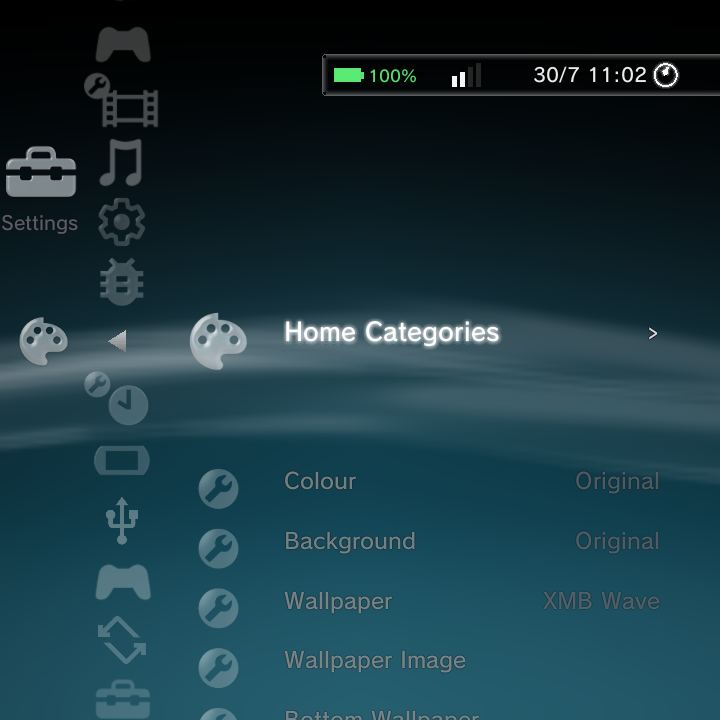
For the home looks themselves (XMB, DSi, Minima and Custom / ES-DE), see Home Themes and ES-DE Themes. This page focuses on wallpapers and the finer appearance controls.
The wallpaper rows
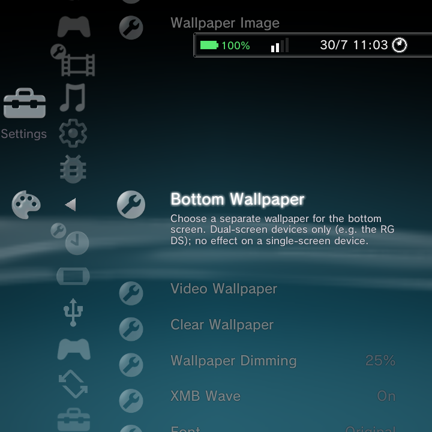
| Row | What it does |
|---|---|
| Wallpaper Image | Pick a photo as the home background, chosen from a picker grid |
| Bottom Wallpaper | A separate wallpaper for the bottom screen (dual-screen devices only) |
| Video Wallpaper | Pick a looping video as the top-screen background |
| Clear Wallpaper | Remove the custom wallpaper and bring back the moving wave |
| Wallpaper Dimming | Darken a photo or video wallpaper so icons and text stay readable |
| XMB Wave | Show or hide the PS3 wave (auto-off when a wallpaper is set) |
Setting a video wallpaper
A looping video makes a lively, console-like backdrop. Here is the whole flow.
- Go to Settings > Theme Settings > Video Wallpaper.
- Nano scans your videos and shows them in a picker. Choose the one you want.
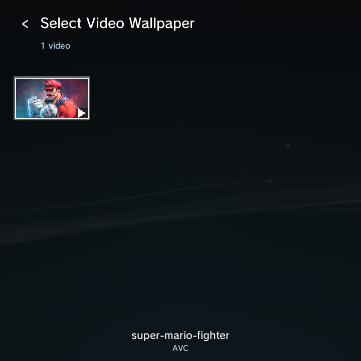
- Select it, and it starts playing behind the home right away, looping quietly.
Put the videos you want to use in your Movies folder so the picker can find them. The XMB wave switches off automatically when a wallpaper is set, so the video shows cleanly.
The darkened scrim (Wallpaper Dimming)
A bright or busy wallpaper can make the menu text and icons hard to read. Wallpaper Dimming lays a dark scrim over the wallpaper to fix that. Higher values make it darker. The range is 0 to 70 percent, and the default is a gentle 25 percent. You can push it much higher for a moody, high-contrast look where the menu really pops.
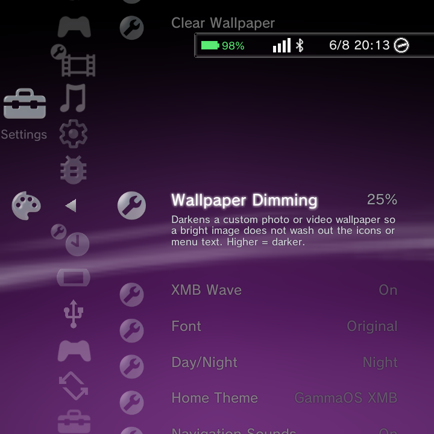
Wallpaper Dimming only affects a custom photo or video wallpaper. With no wallpaper set (just the wave), it does nothing.
Removing a wallpaper
Choose Clear Wallpaper to drop the custom image or video on both screens and bring back the moving wave. If you would rather keep a wallpaper but see the wave too, turn XMB Wave back on.
Font Size
Font Size scales the UI text live across all three themes (XMB, DSi and Minima). As you change it the text resizes immediately, and word-wrapped paragraphs reflow so nothing runs off the edge. Bump it up for readability on a small panel or across the room, or down to fit more on screen.
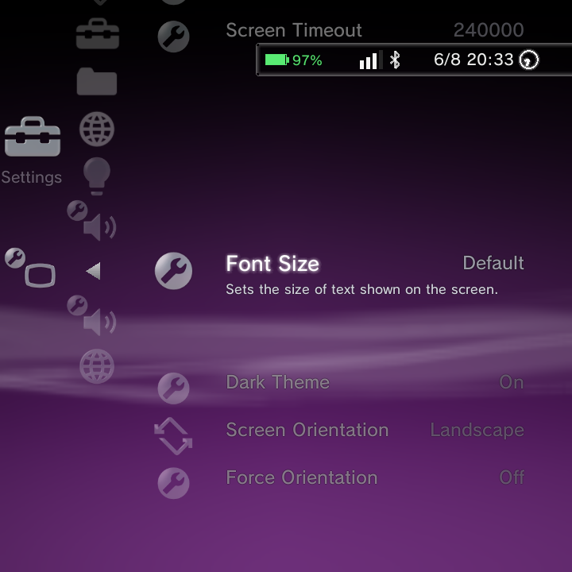
Font Size lives here in Theme Settings, not in the GammaOS Toolbox, in case you go looking for it there.
Home Categories editor
Home Categories lets you tidy the home to just the columns you use. You can hide categories you never open, reorder the ones you keep, and even drill into a category to hide individual rows inside it. Changes save straight away and apply live.
On-screen controls:
| Button | What it does |
|---|---|
| X | Hide or show the highlighted category |
| L1 / R1 | Move the highlighted category up or down the order |
| A | Drill into a category to hide or show its individual rows |
| B | Back out and save |
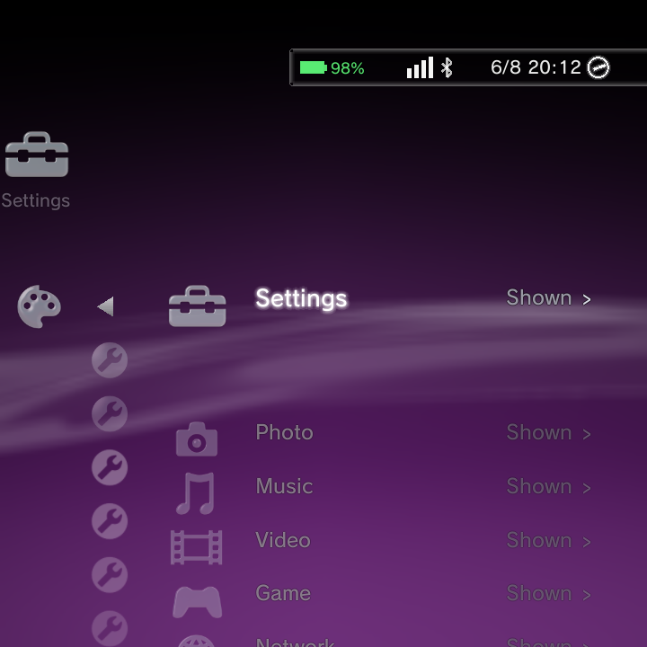
A few rules keep the home usable:
- Quick Menu always stays first and cannot be moved out of place.
- Settings cannot be hidden, so you can always get back into the menus.
- At least one category must stay visible. Nano will not let you hide the very last one.
The same on-screen legend is shown on the editor screen itself, so you never have to guess the controls.
Startup Menu
Startup Menu picks where the home opens when the device boots. It works in every theme.
- Default opens the home as usual.
- Any top-level category (Settings, Photo, Music, Video, Game and so on) opens the home on that category.
- Any game system that has games (NES, SNES, Game Boy, Nintendo DS...) drops you straight into that system's game list, so you can land in your DS library the moment the device is on.
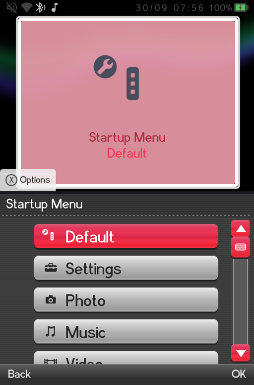
Scroll further down the same list to find your game systems:

Colour
Colour sets the accent for XMB (the wave), Minima (the capsule and hint bar) and DSi (the chrome and the top screen). There are 21 presets: Original, Yellow, Green, Pink, Dark Green, Light Purple, Teal, Dark Blue, Magenta, Orange, Brown, Red, Black, White, Gray, Blue, Cyan, Lime, Gold, Violet and Crimson.
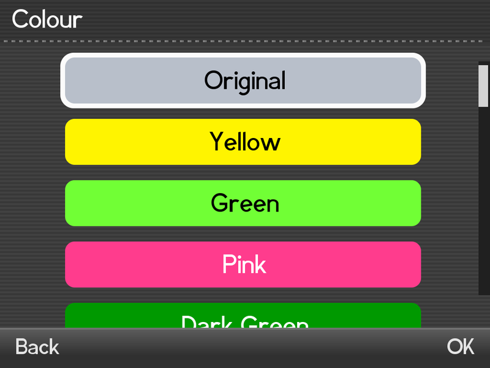
Custom
The last entry, Custom..., opens the full-screen Custom Colour picker so you can choose any colour:
| Control | What it does |
|---|---|
| D-Pad / stick Left and Right | Hue |
| D-Pad / stick Up and Down | Brightness |
| L1 / R1 | Less or more saturation |
| A | Apply |
| B | Cancel |
| Hold Select (about a second) | Exit the picker |
After you apply it the row reads Custom and the colour shows up live in XMB, DSi and Minima. There is a live demo of the picker on the Home Themes page.
Half Resolution: Wave / Clock
Two XMB-only rows help weaker GPUs keep a full frame rate:
- Half Resolution: Wave draws the PS3 wave at half size and scales it up.
- Half Resolution: Clock does the same for the XMB clock.
Both are Off by default and apply live. Only the wave or the clock is rendered smaller; the menu text and icons stay sharp. Turn them on if the XMB feels less than smooth on your device.

Sounds
- Boot Sound (On by default, every theme): turn the boot chime on or off. The change applies from the next boot.
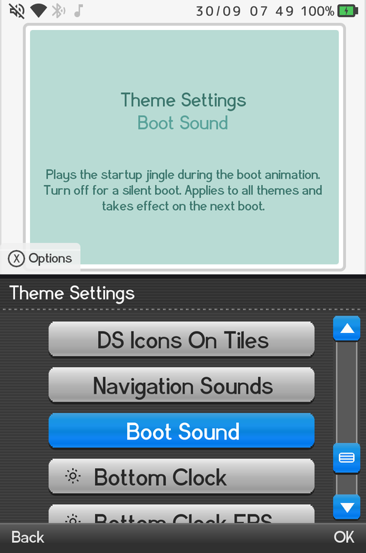
- Menu Music (On by default, DSi only): the looping DSi menu music.
- Navigation Sounds (On by default, every theme): the cursor, select and back sound effects. The boot chime is not affected.
Show Battery Percent
Show Battery Percent (Off by default) shows the charge as a number next to the battery: in the status bar on the DSi theme and in the status pill on Minima. The row only appears in those two themes.

In every theme except ES-DE, the battery icon also shows a lightning bolt while the device is charging.
Setting confirmations
When you change a setting, sort a list or pin an item, a small confirmation now appears in a style that fits the theme:
- DSi and Minima: a compact card in the corner (at the top right of the list on DSi, as in the screenshot above).
- XMB: the message slides into the clock bar as frosted glass.
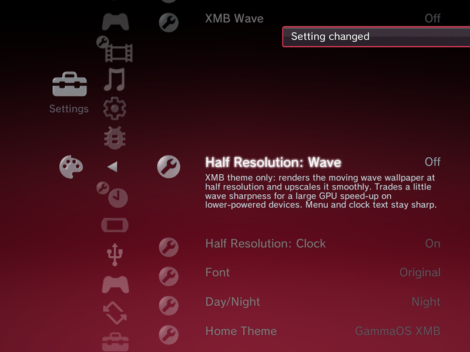
Rows adapt to your theme
Theme Settings only shows the rows that apply to the theme you are using, so the menu stays short and relevant. Options that belong to a theme you are not currently running are hidden until you switch to it.
| Rows | Shown in |
|---|---|
| Home Theme, Startup Menu, Colour, Font Size, Home Categories, Wallpaper Image, Video Wallpaper, Clear Wallpaper, Wallpaper Dimming, Boot Sound, Navigation Sounds | Every theme |
| Background, Font, Day/Night, Half Resolution: Wave, Half Resolution: Clock | XMB only |
| XMB Wave | XMB and Minima |
| Wallpaper (the background effect picker) | XMB and DSi |
| Background Colour, Long Names | Minima only |
| Show Battery Percent | DSi and Minima |
| DSi Dark Theme, Menu Music, Titles From ROM, DS Icons On Tiles, Dual Screen, Screen Gap | DSi only |
| Bottom Clock, Bottom Clock FPS, Bottom Wallpaper | Dual-screen devices only, in any theme |
With the Custom / ES-DE theme active, the XMB-only rows are hidden too; ES-DE themes bring their own layouts and colours, set from the theme's UI SETTINGS menu (see ES-DE Themes).
Other appearance controls
Theme Settings also holds:
- Background and Font: overall background style and font look (XMB).
- Day/Night: the XMB lighting blend.
- Background Colour: a solid colour for the Minima home (Minima only).
- Long Names: Scroll (the default) or Shrink to Fit for long names in the Minima list.
- XMB Wave: also available in Minima as an opt-in alternative to the plain black canvas; the choice persists.
- Bottom Clock and Bottom Clock FPS: the PSP-style clock on dual-screen devices.
- Home Theme: switch between GammaOS XMB, DSi Menu, Minima and Custom / ES-DE. The new theme applies straight away.
DSi-only rows
With the DSi theme active you also get:
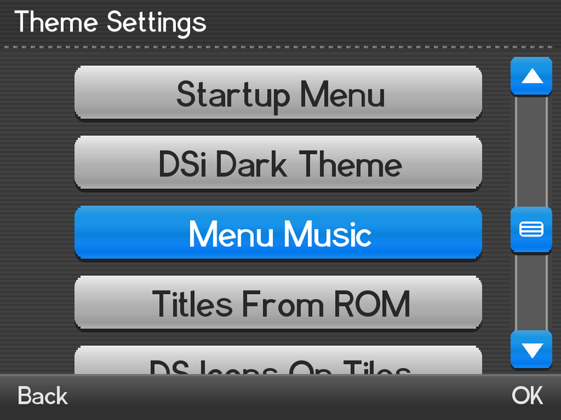
- DSi Dark Theme: flip the whole DSi look to light-on-dark, live (see Home Themes).
- Menu Music: the DSi menu music, On by default.
- Titles From ROM (On by default): DS games without a scraped name show the title stored in the cartridge instead of the file name.
- DS Icons On Tiles (Off by default): keep each DS game's own cartridge icon on its carousel tile even when scraped box art exists. The box art still shows on the top screen.
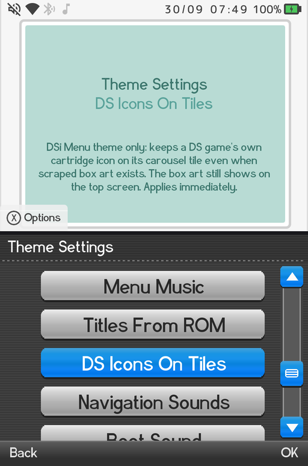
- Wallpaper: the DSi background effect (see below).
- Dual Screen: choose Auto, Top+Bottom, or Carousel-Only for how the two DSi screens are laid out.
- Screen Gap: tune the spacing between the stacked screens on portrait panels.
DSi Background Effect
On the DSi theme, the Wallpaper row picks an animated background effect that plays on both screens, behind the see-through canvas, name balloon and scroll rail. The choices are None, Snow, Rain, Confetti, Sparks, Fireflies, Bubbles, Starfield, Embers, Leaves, Plasma, Fire, Aurora, Ripple, Checkerboard, Spiral, XMB and XMB Wave. The DSi remembers its own choice, separate from the XMB one, so switching themes does not change either.
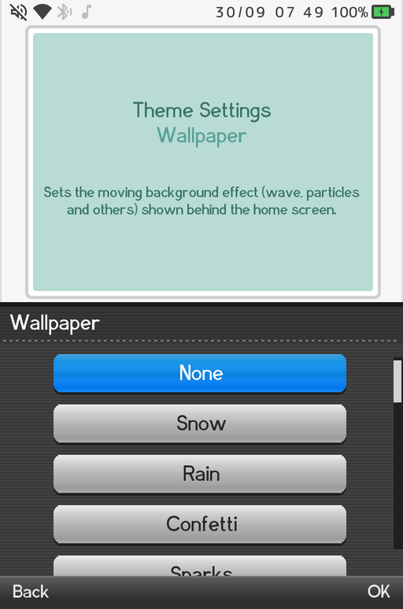
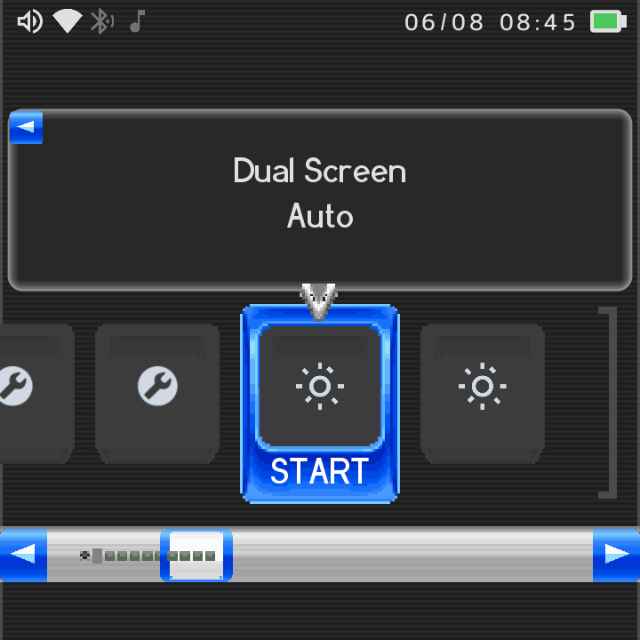
On single-screen 4:3 DSi layouts, a top status bar reserves space for the clock, Wi-Fi, Bluetooth and date.
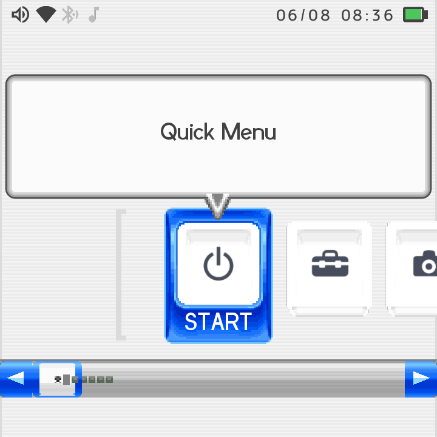
The wizard and HUD follow your theme
The first-run setup wizard and the on-screen HUDs now render in whichever theme is active. Scraper progress and the setup wizard show the Minima or DSi look when you use those themes, and the brightness and volume HUD popups match the active theme too.
Where to go next
- Home Themes for the XMB, DSi and Minima looks in detail.
- ES-DE Themes for the fourth theme.
- Settings Reference for the whole Settings tree.